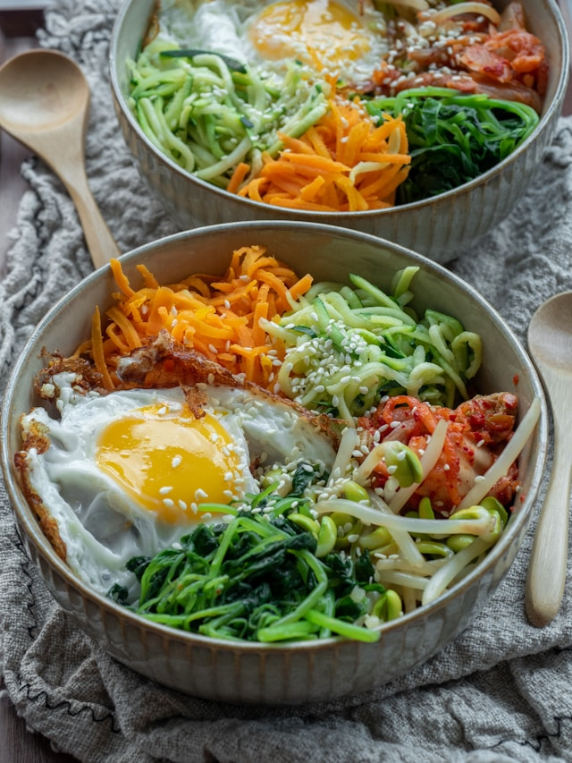

A staple in korean cuisine, easy to make and packed with flavour! A delicious rice bowl packed with delicious beef, beanspouts and carrots topped with sesame seeds and an egg.
Mix the bibimbap sauce ingredients together in a small bowl with 1 tbsp water and set aside.
Put the sliced mushroom, courgette, carrot and beansprouts on a plate. Put a small heatproof bowl or ramekin upside down in the middle of a medium lidded pan. Add enough water to come halfway up the ramekin and bring to a boil. Carefully put the plate of vegetables on top of the ramekin and put a lid on the pan. Steam the vegetables for 3 mins until tender.
Meanwhile, put the spinach in a bowl and pour boiling water over the top. Stir to wilt the leaves, then drain and rinse under cold water. Squeeze any excess water from the spinach, then mix in a bowl with the sesame oil, a pinch of salt and sesame seeds. Set aside.
Heat the vegetable oil in a frying pan over a high heat. Crack in the egg and fry to your liking.
Fill a bowl with the rice. Top with the fried egg, then use tongs to add the steamed vegetables around it. Serve with the bibimbap sauce, a little extra sesame oil and sesame seeds. Mix everything together before eating. Any leftover bibimbap sauce will keep chilled for up to five days.